生信基地第二课线下阶段收官~
原文：https://mp.weixin.qq.com/s?__biz=MzAwMzIzOTk5OQ==&mid=2247525030&idx=1&sn=a006e1a4f36ae20744d81c8ff7afc240&chksm=9b3c1bf6ac4b92e08bce0ab6ba9a4e2e1e967572c50a91a141395252c471bcba789d4c7dfb58#rd 合集：生信基地

生信基地第二课


想了很久的生信基地已经落地，我们也开始积极探索为生信领域做贡献的新方法，希望能够给大家提供系统性、形成性、规范性的生信教学。
这次我们邀请到的主讲老师华哥 在生信基地完成12月7~8日 为期两天的线下教学。在有限的时间里我们完成了"编程基础学习--R语言"、"编程基础知识---数据结构"、"以Nature文章源代码学习转录组数据表达矩阵处理基本处理"、"以Cell文章源代码学习生存曲线"的学习。现已把一~四节课 的代码数据 文件整理打包，并录制了视频回放 ，大家可以转发此条推送至朋友圈，30赞添加客服微信发送截图领取(不限名额)：
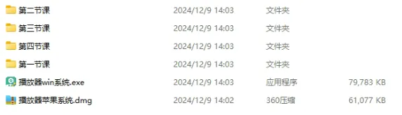
已有生信基地联系方式的同学无需重复添加

上课ing:
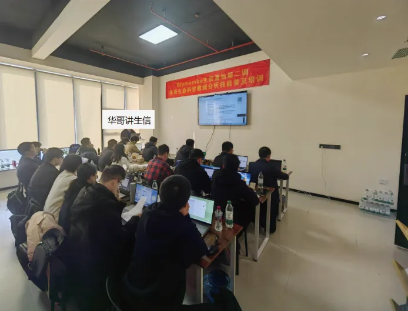
下课留念合影：
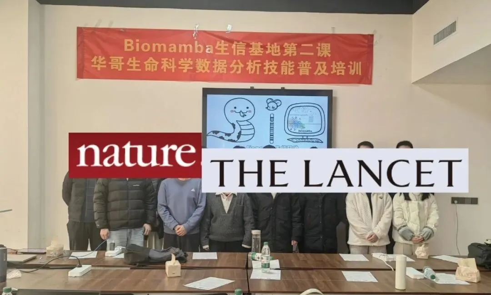
华哥介绍：中山大学博士，师从加州大学终身教授，深耕于单细胞多组学数据分析 和机器学习算法 研究，发表过多篇CNS子刊 ，参与过多项国自然重点 、国家重大专项 、孔雀计划 等项目申报，指导过多篇CNS文章生信分析。

完整课表
1.一个月时间 掌握基本的CNS文章数据分析****
- 授课方式采用线上线下相结合 ，同步进行。线上腾讯会议直播课 ，互动答疑。 线下在南京，现场教学更踏实 ！
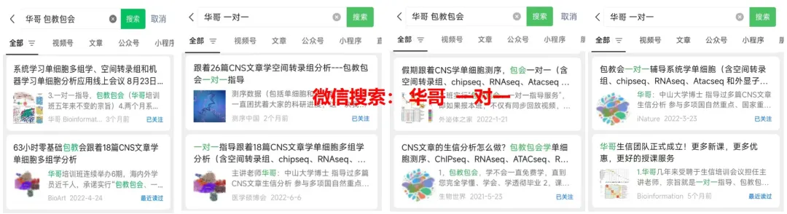
4.深入剖析二十篇CNS文章 的分析思路和分析方法， 按照CNS文章源代码讲解 ，以文章的fig为例进行代码演示和复现学习，个性化分析第一节：编程基础学习--R语言
1.R和Rstudio的安装、环境配置
2.R语言简单语法及常见命令
3.以Cell文章方法 描述学习R包的安装及使用
4.以Nature文章源代码 学习重点函数基础代码
第二节：编程基础知识---数据结构
1.向量、矩阵、数据框和列表的创建和索引
2.多种数据结构的合并**【Cell】**
3.自定义Function函数构建
4.for循环、字符型数据的处理**【Cell】**
第三节： 以Nature文章源代码学习转录组数据表达矩阵处理基本处理
1.重复基因和缺失值的删除
2.不同分组样本的批量归类**【Nature】**
3.多个样本的表达矩阵合并
4.芯片探针基因名字的转换**【Nature】**
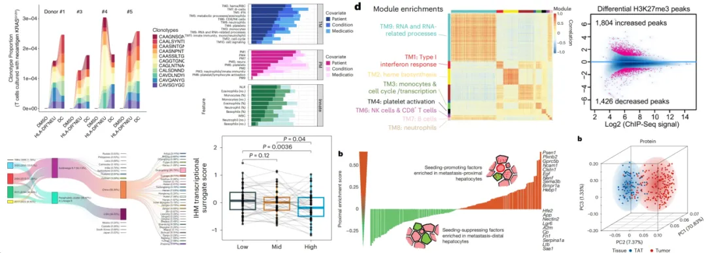
第四节： 以Cell文章源代码学习生存曲线
1.临床预后信息的批量整理
2.创建生存对象、拟合曲线**【Cell】**
3.特定基因的筛选构建预后分组
4.combat算法不同数据集的批次处理
第五节：差异分析 RNAseq数据分析
1.芯片数据上游分析**【Cancer Discovery】**
2.多个样本的数据归一化处理
3.分组矩阵系统讲解**【Nature】**
4.Deseq2分析流程**【Science】**
5.EdgeR差异分析系统讲解
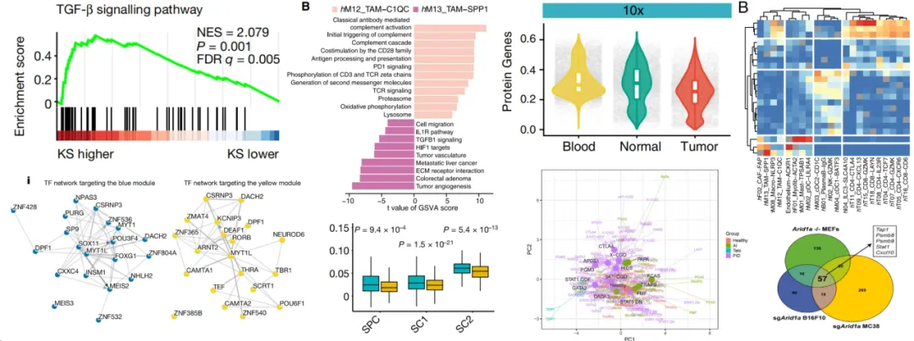
第六节： 以多篇CNS文章源代码学习画图
1.ggplot体系画图包括热图
2.火山图 箱线图 小提琴图**【Nature】**
3.多分组显著性p值添加方法**【Nat Med】**
4.三维pca图展示差异特征**【Science】**
5.层次聚类算法区分不同样本特征
第七节：基因集富集分析
1.over representation
2.GSEA 富集 【Cancer Cell】
3.包括自定义基因集的富集分析
4.富集通路网络图**【Nat Genet】**
5.蛋白互作网络构建**【Nature】**
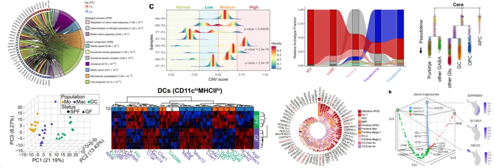
第八节： 以Nature文章为例系统讲解单细胞转录组基本分析
1.单细胞在CNS文章思路解析及常见图形解读
2.数据质控、数据放缩、PCA降维、聚类
3.三维tSNE、UMAP可视化**【Science】**
4.单细胞多组学分析思路和方法**【Nature】**
第九节 ：单细胞转录组拟时序分析
1.monocle拟时序分析 【Nature】
2.细胞排序，构造一棵生成树
3.基因随轨迹分析变化热图**【Cell】**
4.BEAM轨迹分支分析**【Nature】**
5.自测和挖掘单细胞项目思路归纳总结
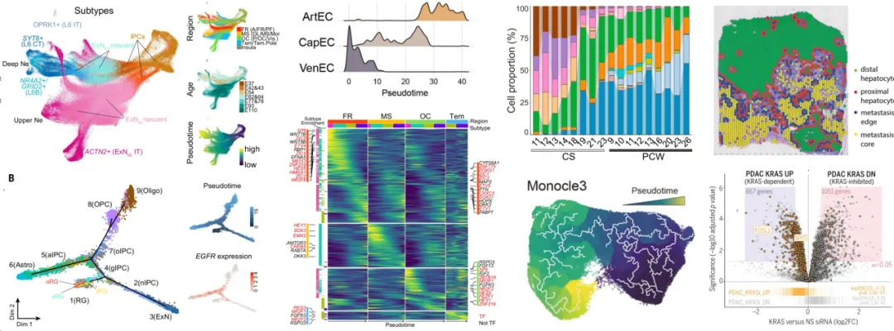
第十节：空间转录组理论及分析内容
1.空间转录组技术发展历程和原理介绍
2.空间转录组CNS文章思路解析 及常见图解读
3.10x Visium 基本分析流程**【Cancer Cell】**
4.空间数据与单细胞整合分析思路
第十一节课：高分辨空间转录组分析
1.Xenium 空转数据分析**【Nature】**
2.Visium HD空转数据分析**【Cell】**
3.Stereo-seq “亚细胞级分辨率” 测序介绍
4.空间测序多截面3D邻域重建**【Nature】**
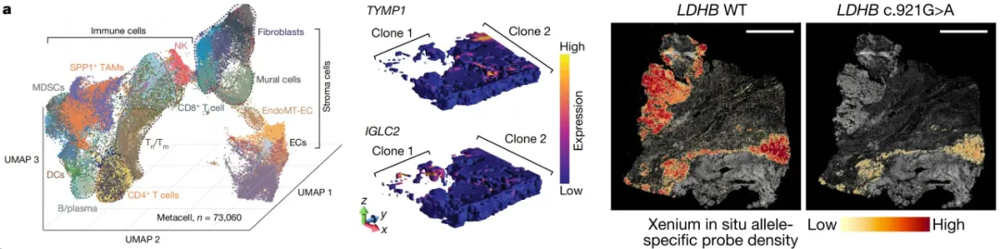
第十二节课：机器学习基础理论
1.随机森林和支持向量机（SVM）
2.弹性网络回归算法Enet**【Cell】**
3.广义提升回归模型（GBM）
第十三节课：表观遗传研究
1.ChIP-seq、ATAC-seq在CNS文章中应用
2.ChIP-seq数据分析峰值可视化**【Nature】**
3.ATAC-seq数据peak注释【Cancer Cell】
4.峰值在外显子、内含子、启动子的分布计算
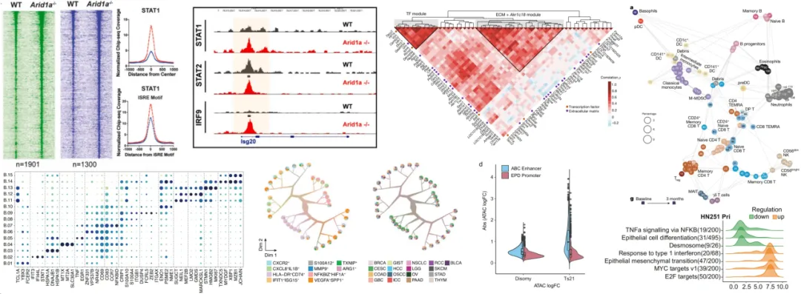
**第十四节：加权基因共表达网络分析 (WGCNA）算法系统讲解以 nature文章为例 **
1.构建邻接矩阵和拓扑重叠矩阵
2.无尺度网络模型**【Nature】**
3.共表达调控网络**【Cell】**
第十五节：免疫浸润计算
1.CIBERSORT反卷积算法，以TCGA数据为例
2.非监督共识聚类算法**【Science】**
3.转录因子富集**【Cell Stem Cell】**
4.Mfuzz、 BioNet调控网络构建
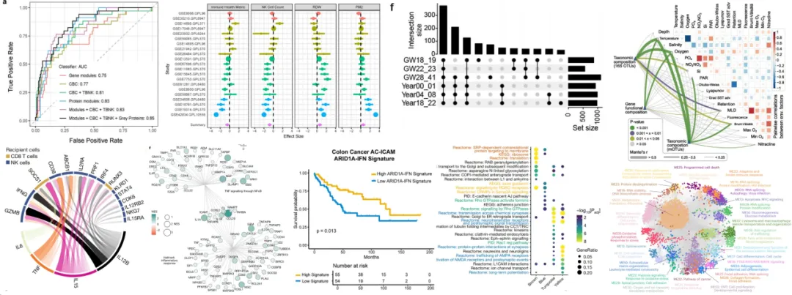
第十六节：大数据分析在基金申请中应用
第十七节：实践课 （课程总结，带领学员使用自测数据完成整体分析流程 ）
报名联系方式 ：

如何联系我们

 公众号后台消息回复不便，这里给大家留一下领取资料及免费服务器(足够支持你完成硕博生涯的生信环境)的微信号 ，方便各位随时交流（别问在么，添加时直接说来意）。呼声很高的交流群 也建好了，欢迎大家入群讨论：
公众号后台消息回复不便，这里给大家留一下领取资料及免费服务器(足够支持你完成硕博生涯的生信环境)的微信号 ，方便各位随时交流（别问在么，添加时直接说来意）。呼声很高的交流群 也建好了，欢迎大家入群讨论：
大家可以阅读完这几篇之后添加给生信入门初学者的小贴士 如何搜索公众号过往发布内容
已有生信基地联系方式的同学无需重复添加
 您点的每个赞和在看，我都认真当成了喜欢
您点的每个赞和在看，我都认真当成了喜欢